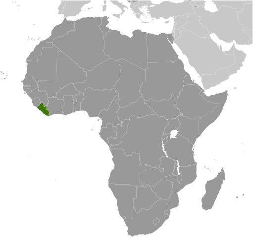
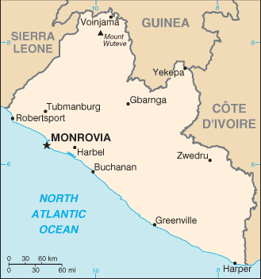

Africa :: LIBERIA
Introduction :: LIBERIA
-
Settlement of freed slaves from the US in what is today Liberia began in 1822; by 1847, the Americo-Liberians were able to establish a republic. William TUBMAN, president from 1944-71, did much to promote foreign investment and to bridge the economic, social, and political gaps between the descendants of the original settlers and the inhabitants of the interior. In 1980, a military coup led by Samuel DOE ushered in a decade of authoritarian rule. In December 1989, Charles TAYLOR launched a rebellion against DOE's regime that led to a prolonged civil war in which DOE was killed. A period of relative peace in 1997 allowed for an election that brought TAYLOR to power, but major fighting resumed in 2000. An August 2003 peace agreement ended the war and prompted the resignation of former president Charles TAYLOR, who was convicted by the UN-backed Special Court for Sierra Leone in The Hague for his involvement in Sierra Leone's civil war. After two years of rule by a transitional government, democratic elections in late 2005 brought President Ellen JOHNSON SIRLEAF to power. She subsequently won reelection in 2011 and remains challenged to rebuild Liberia's economy, particularly following the 2014-15 Ebola epidemic, and to reconcile a nation still recovering from 14 years of fighting. The UN Security Council in September 2015 passed Resolution 2239, which renewed the mandate for the UN Mission in Liberia for another year. In July 2016, the UN handed over peacekeeping responsibility to Liberia and reduced the UN troop presence, which now serves a support role.
Geography :: LIBERIA
-
Western Africa, bordering the North Atlantic Ocean, between Cote d'Ivoire and Sierra Leone6 30 N, 9 30 WAfricatotal: 111,369 sq kmland: 96,320 sq kmwater: 15,049 sq kmcountry comparison to the world: 104slightly larger than Tennesseetotal: 1,667 kmborder countries (3): Guinea 590 km, Cote d'Ivoire 778 km, Sierra Leone 299 km579 kmterritorial sea: 200 nmtropical; hot, humid; dry winters with hot days and cool to cold nights; wet, cloudy summers with frequent heavy showersmostly flat to rolling coastal plains rising to rolling plateau and low mountains in northeastmean elevation: 243 melevation extremes: lowest point: Atlantic Ocean 0 mhighest point: Mount Wuteve 1,380 miron ore, timber, diamonds, gold, hydropoweragricultural land: 28.1%arable land 5.2%; permanent crops 2.1%; permanent pasture 20.8%forest: 44.6%other: 27.3% (2011 est.)30 sq km (2012)dust-laden harmattan winds blow from the Sahara (December to March)tropical rain forest deforestation; soil erosion; loss of biodiversity; pollution of coastal waters from oil residue and raw sewageparty to: Biodiversity, Climate Change, Climate Change-Kyoto Protocol, Desertification, Endangered Species, Hazardous Wastes, Law of the Sea, Ozone Layer Protection, Ship Pollution, Tropical Timber 83, Tropical Timber 94, Wetlandssigned, but not ratified: Environmental Modification, Marine Life Conservationfacing the Atlantic Ocean, the coastline is characterized by lagoons, mangrove swamps, and river-deposited sandbars; the inland grassy plateau supports limited agriculture
People and Society :: LIBERIA
-
4,299,944 (July 2016 est.)country comparison to the world: 128noun: Liberian(s)adjective: LiberianKpelle 20.3%, Bassa 13.4%, Grebo 10%, Gio 8%, Mano 7.9%, Kru 6%, Lorma 5.1%, Kissi 4.8%, Gola 4.4%, other 20.1% (2008 Census)English 20% (official), some 20 ethnic group languages few of which can be written or used in correspondenceChristian 85.6%, Muslim 12.2%, Traditional 0.6%, other 0.2%, none 1.4% (2008 Census)Liberia’s high fertility rate of nearly 5 children per woman and large youth cohort – more than 60% of the population is under the age of 25 – will sustain a high dependency ratio for many years to come. Significant progress has been made in preventing child deaths, despite a lack of health care workers and infrastructure. Infant and child mortality have dropped nearly 70% since 1990; the annual reduction rate of about 5.4% is the highest in Africa.Nevertheless, Liberia’s high maternal mortality rate remains among the world’s worst; it reflects a high unmet need for family planning services, frequency of early childbearing, lack of quality obstetric care, high adolescent fertility, and a low proportion of births attended by a medical professional. Female mortality is also increased by the prevalence of female genital cutting (FGC), which is practiced by 10 of Liberia’s 16 tribes and affects more than two-thirds of women and girls. FGC is an initiation ritual performed in rural bush schools, which teach traditional beliefs on marriage and motherhood and are an obstacle to formal classroom education for Liberian girls.Liberia has been both a source and a destination for refugees. During Liberia’s 14-year civil war (1989-2003), more than 250,000 people became refugees and another half million were internally displaced. Between 2004 and the cessation of refugee status for Liberians in June 2012, the UNHCR helped more than 155,000 Liberians to voluntarily repatriate, while others returned home on their own. Some Liberian refugees spent more than two decades living in other West African countries. Liberia hosted more than 125,000 Ivoirian refugees escaping post-election violence in 2010-11; as of mid-2016, about 20,000 Ivoirian refugees were still living in Liberia because of instability.0-14 years: 42.3% (male 917,354/female 901,627)15-24 years: 18.9% (male 400,013/female 412,869)25-54 years: 31.32% (male 669,630/female 677,321)55-64 years: 4.3% (male 89,264/female 95,519)65 years and over: 3.17% (male 66,658/female 69,689) (2016 est.)total dependency ratio: 82.9%youth dependency ratio: 77.4%elderly dependency ratio: 5.5%potential support ratio: 18.2% (2015 est.)total: 18.3 yearsmale: 18.1 yearsfemale: 18.5 years (2016 est.)country comparison to the world: 2112.44% (2016 est.)country comparison to the world: 2533.9 births/1,000 population (2016 est.)country comparison to the world: 269.5 deaths/1,000 population (2016 est.)country comparison to the world: 540 migrant(s)/1,000 population (2016 est.)country comparison to the world: 88urban population: 49.7% of total population (2015)rate of urbanization: 3.36% annual rate of change (2010-15 est.)MONROVIA (capital) 1.264 million (2015)at birth: 1.03 male(s)/female0-14 years: 1.02 male(s)/female15-24 years: 0.97 male(s)/female25-54 years: 0.99 male(s)/female55-64 years: 0.93 male(s)/female65 years and over: 0.97 male(s)/femaletotal population: 0.99 male(s)/female (2016 est.)19.2note: median age at first birth among women 25-29 (2013 est.)725 deaths/100,000 live births (2015 est.)country comparison to the world: 8total: 65.8 deaths/1,000 live birthsmale: 69.9 deaths/1,000 live birthsfemale: 61.5 deaths/1,000 live births (2016 est.)country comparison to the world: 15total population: 59 yearsmale: 57.3 yearsfemale: 60.8 years (2016 est.)country comparison to the world: 2024.6 children born/woman (2016 est.)country comparison to the world: 2220.2% (2013)10% of GDP (2014)country comparison to the world: 30.01 physicians/1,000 population (2008)0.8 beds/1,000 population (2010)improved:urban: 88.6% of populationrural: 62.6% of populationtotal: 75.6% of populationunimproved:urban: 11.4% of populationrural: 37.4% of populationtotal: 24.4% of population (2015 est.)improved:urban: 28% of populationrural: 5.9% of populationtotal: 16.9% of populationunimproved:urban: 72% of populationrural: 94.1% of populationtotal: 83.1% of population (2015 est.)1.09% (2015 est.)country comparison to the world: 3930,200 (2015 est.)country comparison to the world: 661,900 (2015 est.)country comparison to the world: 56degree of risk: very highfood or waterborne diseases: bacterial and protozoal diarrhea, hepatitis A, and typhoid fevervectorborne diseases: malaria, dengue fever, and yellow feverwater contact disease: schistosomiasisaerosolized dust or soil contact disease: Lassa feveranimal contact disease: rabies (2016)5.8% (2014)country comparison to the world: 16115.3% (2013)country comparison to the world: 282.8% of GDP (2012)country comparison to the world: 144definition: age 15 and over can read and writetotal population: 47.6%male: 62.4%female: 32.8% (2015 est.)total number: 177,160percentage: 21% (2007 est.)total: 5.1%male: 3.4%female: 6.6% (2010 est.)country comparison to the world: 126
Government :: LIBERIA
-
conventional long form: Republic of Liberiaconventional short form: Liberiaetymology: name derives from the Latin word "liber" meaning "free"; so named because the nation was created as a homeland for liberated African-American slavespresidential republicname: Monroviageographic coordinates: 6 18 N, 10 48 Wtime difference: UTC 0 (5 hours ahead of Washington, DC, during Standard Time)15 counties; Bomi, Bong, Gbarpolu, Grand Bassa, Grand Cape Mount, Grand Gedeh, Grand Kru, Lofa, Margibi, Maryland, Montserrado, Nimba, River Cess, River Gee, Sinoe26 July 1847Independence Day, 26 July (1847)previous 1847 (at independence); latest drafted 19 October 1983, revised version adopted by referendum 3 July 1984, effective 6 January 1986; amended 2011; note - a series of amendment proposals approved by the Constitution Review Conference in early 2015 are pending government review (2016)mixed legal system of common law (based on Anglo-American law) and customary lawaccepts compulsory ICJ jurisdiction with reservations; accepts ICCt jurisdictioncitizenship by birth: nocitizenship by descent only: at least one parent must be a citizen of Liberiadual citizenship recognized: noresidency requirement for naturalization: 2 years18 years of age; universalchief of state: President Ellen JOHNSON SIRLEAF (since 16 January 2006); Vice President Joseph BOAKAI (since 16 January 2006); note - the president is both chief of state and head of governmenthead of government: President Ellen JOHNSON SIRLEAF (since 16 January 2006); Vice President Joseph BOAKAI (since 16 January 2006)cabinet: Cabinet appointed by the president, confirmed by the Senateelections/appointments: president directly elected by absolute majority popular vote in 2 rounds if needed for a 6-year term (eligible for a second term); election last held on 11 October and 8 November 2011 (next to be held in 2017)election results: Ellen JOHNSON SIRLEAF reelected president; percent of vote in second round - Ellen JOHNSON SIRLEAF (UP) 90.7%, Winston TUBMAN (NDPL) 9.3%description: bicameral National Assembly consists of the Senate (30 seats; members directly elected in 15 two-seat constituencies by simple majority vote to serve 9-year staggered terms with half the membership renewed at 3- and 6-year intervals; eligible for a second term; and the House of Representatives (73 seats; members directly elected in single-seat constituencies by simple majority vote to serve 6-year terms; eligible for a second term)elections: Senate - last held on 20 December 2014 (originally scheduled for 14 October 2014, but postponed due to Ebola-virus epidemic; next to be held in fall 2020); House of Representatives - last held on 11 October 2011 (next to be held in 2017)election results: Senate - percent of vote by party - CDC 29.8%, LP 11.5%, NPP 6.1%, PUP 4.9%, NDC 1.3%, other parties 11.8%, independent 24.3%; seats by party - UP 4, CDC 2, LP 2, ANC 1, NDC 1, NPP 1, PUP 1, independent 3; House of Representatives - percent of vote by party - UP 17.8%, CDC 12.8%, LP 9.2%, NDC 5.7%, LTP 4.5%, PUP 3.9%, NPP 3.3%, MPC 2.4%, LDP 1.0%, NRP 0.8%, other parties 16.8% independent 19.7% ; seats by party - UP 24, CDC 11, LP 7, PUP 6, NDC 5, APD 3, NPP 3, MPC 2, LDP 1, LTP 1, NRP 1, independent 9highest court(s): Supreme Court (consists of a chief justice and 4 associate justices); note - the Supreme Court has jurisdiction for all constitutional casesjudge selection and term of office: chief justice and associate justices appointed by the president of Liberia with consent of the Senate; judges can serve until age 70subordinate courts: judicial circuit courts; special courts including criminal, civil, labor, traffic; magistrate and traditional or customary courtsAlliance for Peace and Democracy or APD [Marcus S. G. DAHN]Alternative National Congress or ANC [Orishil GOULD]Congress for Democratic Change or CDC [George WEAH]Liberia Destiny Party or LDP [Nathaniel BARNES]Liberia Transformation Party or LTP [Julius SUKU]Liberty Party or LP [J. Fonati KOFFA]Movement for Progressive Change or MPC [Simeon FREEMAN]National Democratic Coalition or NDC [Dew MAYSON]National Democratic Party of Liberia or NDPL [D. Nyandeh SIEH]National Patriotic Party or NPPNational Reformist Party or NRP [Maximillian T. W. DIABE]National Union for Democratic Progress or NUDP [Victor BARNEY]People's Unification Party [Isobe GBORKORKOLLIE]Unity Party or UP [Varney SHERMAN]other: demobilized former military officersACP, AfDB, AU, ECOWAS, EITI (compliant country), FAO, G-77, IAEA, IBRD, ICAO, ICC (NGOs), ICCt, ICRM, IDA, IFAD, IFC, IFRCS, ILO, IMF, IMO, IMSO, Interpol, IOC, IOM, ISO (correspondent), ITU, ITUC (NGOs), MIGA, MINUSMA, NAM, OPCW, UN, UNCTAD, UNESCO, UNIDO, UNWTO, UPU, WCO, WFTU (NGOs), WHO, WIPO, WMO, WTO (observer)chief of mission: Ambassador Jeremiah Congbeh SULUNTEH (since 2 May 2012)chancery: 5201 16th Street NW, Washington, DC 20011telephone: [1] (202) 723-0437FAX: [1] (202) 723-0436consulate(s) general: New Yorkchief of mission: Ambassador Christine A. ELDER (since 23 June 2016)embassy: U.S. Embassy, 502 Benson Street, Monroviamailing address: P.O. Box 98, Monroviatelephone: [231] 77-677-7000FAX: [231] 77-677-737011 equal horizontal stripes of red (top and bottom) alternating with white; a white five-pointed star appears on a blue square in the upper hoist-side corner; the stripes symbolize the signatories of the Liberian Declaration of Independence; the blue square represents the African mainland, and the star represents the freedom granted to the ex-slaves; according to the constitution, the blue color signifies liberty, justice, and fidelity, the white color purity, cleanliness, and guilelessness, and the red color steadfastness, valor, and fervornote: the design is based on the US flagwhite star; national colors: red, white, bluename: "All Hail, Liberia Hail!"lyrics/music: Daniel Bashiel WARNER/Olmstead LUCAnote: lyrics adopted 1847, music adopted 1860; the anthem's author later became the third president of Liberia
Economy :: LIBERIA
-
Liberia is a low income country that relies heavily on foreign assistance. It is richly endowed with water, mineral resources, forests, and a climate favorable to agriculture. Its principal exports are iron ore, rubber, gold and timber. The government has attempted to revive raw timber extraction and is encouraging oil exploration.In the 1990s and early 2000s, civil war and government mismanagement destroyed much of Liberia's economy, especially infrastructure in and around the capital. With the conclusion of fighting and the installation of a democratically elected government in 2006, businesses that had fled the country began to return. The country achieved high growth during 2010-13 due to favorable world prices for its commodities. However, in 2014 as the Ebolavirus began to spread, the economy declined and many businesses departed, taking capital and expertise with them. The epidemic forced the government to divert scarce resources to combat the spread of the virus, reducing funds available for needed public investment. The cost of addressing the Ebola epidemic will weigh heavily on public finances at the same time decreased economic activity reduces government revenue, although higher donor support will partly offset this loss.Revitalizing the economy in the future will depend on increasing investment and trade, higher global commodity prices, sustained foreign aid and remittances, development of infrastructure and institutions, and maintaining political stability and security.$3.749 billion (2015 est.)$3.748 billion (2014 est.)$3.723 billion (2013 est.)note: data are in 2015 US dollarscountry comparison to the world: 179$2.035 billion (2015 est.)0% (2015 est.)0.7% (2014 est.)8.7% (2013 est.)country comparison to the world: 194$900 (2015 est.)$900 (2014 est.)$900 (2013 est.)note: data are in 2015 US dollarscountry comparison to the world: 225NA% (2015 est.)-41% of GDP (2014 est.)-2.3% of GDP (2012 est.)household consumption: 134.1%government consumption: 16.3%investment in fixed capital: 19.5%investment in inventories: -5.2%exports of goods and services: 25%imports of goods and services: -94.9% (2015 est.)agriculture: 35.2%industry: 14.4%services: 50.4% (2015 est.)rubber, coffee, cocoa, rice, cassava (manioc, tapioca), palm oil, sugarcane, bananas; sheep, goats; timbermining (iron ore), rubber processing, palm oil processing, timber, diamonds-8% (2015 est.)country comparison to the world: 1921.604 million (2015 est.)country comparison to the world: 129agriculture: 70%industry: 8%services: 22% (2000 est.)85% (2003 est.)country comparison to the world: 20763.8% (2007 est.)lowest 10%: 2.4%highest 10%: 30.1% (2007)revenues: $688.2 millionexpenditures: $812.4 million (2015 est.)33.8% of GDP (2015 est.)country comparison to the world: 67-6.1% of GDP (2015 est.)country comparison to the world: 1825.7% of GDP (2015 est.)0.5% of GDP (2014 est.)country comparison to the world: 178calendar year7.7% (2015 est.)9.8% (2014 est.)country comparison to the world: 19913.61% (31 December 2015 est.)13.5% (31 December 2014 est.)country comparison to the world: 52$458.4 million (31 December 2015 est.)$463.5 million (31 December 2014 est.)country comparison to the world: 165$738.7 million (31 December 2014 est.)$656 million (31 December 2013 est.)country comparison to the world: 174$824.1 million (31 December 2015 est.)$736.5 million (31 December 2014 est.)country comparison to the world: 165$NA-$801 million (2015 est.)-$635 million (2014 est.)country comparison to the world: 113$330.8 million (2015 est.)$624.1 million (2014 est.)country comparison to the world: 182rubber, timber, iron, diamonds, cocoa, coffeePoland 32.9%, China 20.7%, India 9.3%, US 5.1%, Greece 4.7%, France 4.3% (2015)$2.232 billion (2015 est.)$2.167 billion (2014 est.)country comparison to the world: 158fuels, chemicals, machinery, transportation equipment, manufactured goods; foodstuffsSingapore 28.7%, China 16%, South Korea 15.3%, Japan 10.3%, Philippines 6.6% (2015)$968 million (31 December 2015 est.)$633 million (31 December 2014 est.)country comparison to the world: 166$17.01 billion (31 December 2015 est.)$16.56 billion (31 December 2014 est.)country comparison to the world: 81$201 million (31 December 2013 est.)$201 million (31 December 2012 est.)country comparison to the world: 92Liberian dollars (LRD) per US dollar -85.3 (2015 est.)83.893 (2014 est.)83.893 (2013 est.)73.52 (2012 est.)72.227 (2011 est.)
Energy :: LIBERIA
-
population without electricity: 3,900,000electrification - total population: 10%electrification - urban areas: 17%electrification - rural areas: 3% (2013)300 million kWh (2014 est.)country comparison to the world: 179300 million kWh (2014 est.)country comparison to the world: 1830 kWh (2013 est.)country comparison to the world: 1610 kWh (2013 est.)country comparison to the world: 17027,000 kW (2014 est.)country comparison to the world: 202100% of total installed capacity (2012 est.)country comparison to the world: 170% of total installed capacity (2012 est.)country comparison to the world: 1290% of total installed capacity (2012 est.)country comparison to the world: 1820% of total installed capacity (2012 est.)country comparison to the world: 1940 bbl/day (2015 est.)country comparison to the world: 1580 bbl/day (2013 est.)country comparison to the world: 1510 bbl/day (2013 est.)country comparison to the world: 2140 bbl (1 January 2016 es)country comparison to the world: 1570 bbl/day (2013 est.)country comparison to the world: 2026,600 bbl/day (2014 est.)country comparison to the world: 1760 bbl/day (2013 est.)country comparison to the world: 1966,611 bbl/day (2013 est.)country comparison to the world: 1680 cu m (2013 est.)country comparison to the world: 2130 cu m (2013 est.)country comparison to the world: 1640 cu m (2013 est.)country comparison to the world: 1350 cu m (2013 est.)country comparison to the world: 920 cu m (1 January 2014 es)country comparison to the world: 161600,000 Mt (2013 est.)country comparison to the world: 180
Communications :: LIBERIA
-
total subscriptions: 9,000subscriptions per 100 inhabitants: less than 1 (July 2015 est.)country comparison to the world: 198total: 3.652 millionsubscriptions per 100 inhabitants: 87 (July 2015 est.)country comparison to the world: 136general assessment: the limited services available are found almost exclusively in the capital, Monrovia; fixed-line service stagnant and extremely limited; telephone coverage extended to a number of other towns and rural areas by four mobile-cellular network operatorsdomestic: mobile-cellular subscription base growing and teledensity reached 85 per 100 persons in 2015international: country code - 231; satellite earth station - 1 Intelsat (Atlantic Ocean) (2015)3 private TV stations; satellite TV service available; 1 state-owned radio station; about 15 independent radio stations broadcasting in Monrovia, with another 25 local stations operating in other areas; transmissions of 2 international broadcasters are available (2007).lrtotal: 248,000percent of population: 5.9% (July 2015 est.)country comparison to the world: 158
Transportation :: LIBERIA
-
A8 (2016)29 (2013)country comparison to the world: 117total: 2over 3,047 m: 11,524 to 2,437 m: 1 (2013)total: 271,524 to 2,437 m: 5914 to 1,523 m: 8under 914 m: 14 (2013)oil 4 km (2013)total: 429 kmstandard gauge: 345 km 1.435-m gaugenarrow gauge: 84 km 1.067-m gaugenote: most sections of the railways inoperable due to damage sustained during the civil wars from 1980 to 2003, but many are being rebuilt (2008)country comparison to the world: 119total: 10,600 kmpaved: 657 kmunpaved: 9,943 km (2000)country comparison to the world: 134total: 2,771by type: barge carrier 5, bulk carrier 662, cargo 143, carrier 2, chemical tanker 248, combination ore/oil 8, container 937, liquefied gas 92, passenger 2, passenger/cargo 2, petroleum tanker 526, refrigerated cargo 102, roll on/roll off 5, specialized tanker 10, vehicle carrier 27foreign-owned: 2,559 (Angola 1, Argentina 1, Australia 1, Belgium 1, Bermuda 4, Brazil 20, Canada 2, Chile 9, China 4, Croatia 1, Cyprus 9, Denmark 8, Egypt 3, Germany 1185, Gibraltar 5, Greece 505, Hong Kong 48, India 8, Indonesia 4, Israel 34, Italy 47, Japan 110, Latvia 5, Lebanon 1, Monaco 8, Netherlands 31, Nigeria 4, Norway 38, Poland 13, Qatar 5, Romania 3, Russia 109, Saudi Arabia 20, Singapore 22, Slovenia 7, South Korea 2, Sweden 12, Switzerland 25, Syria 1, Taiwan 94, Turkey 16, UAE 37, UK 32, Ukraine 10, Uruguay 1, US 53) (2010)country comparison to the world: 2major seaport(s): Buchanan, Monrovia
Military and Security :: LIBERIA
-
Armed Forces of Liberia (AFL): Army, Navy, Air Force18 years of age for voluntary military service; no conscription (2012)0.82% of GDP (2012)0.86% of GDP (2011)0.82% of GDP (2010)country comparison to the world: 114
Transnational Issues :: LIBERIA
-
although civil unrest continues to abate with the assistance of 6,500 UN Mission in Liberia peacekeepers, as of January 2013, Liberian refugees still remain in Guinea, Cote d'Ivoire, Sierra Leone, and Ghana; Liberia, in turn, shelters refugees fleeing turmoil in Cote d'Ivoire; despite the presence of over 9,000 UN forces in Cote d'Ivoire since 2004, ethnic conflict continues to spread into neighboring states who can no longer send their migrant workers to Ivorian cocoa plantations; UN sanctions ban Liberia from exporting diamonds and timberrefugees (country of origin): 19,875 (Cote d'Ivoire) (2016)IDPs: up to 23,000 (civil war from 1990-2004; post-election violence in March and April 2011; many dwell in slums in Monrovia) (2014)stateless persons: 1 (2015)transshipment point for Southeast and Southwest Asian heroin and South American cocaine for the European and US markets; corruption, criminal activity, arms-dealing, and diamond trade provide significant potential for money laundering, but the lack of well-developed financial system limits the country's utility as a major money-laundering center